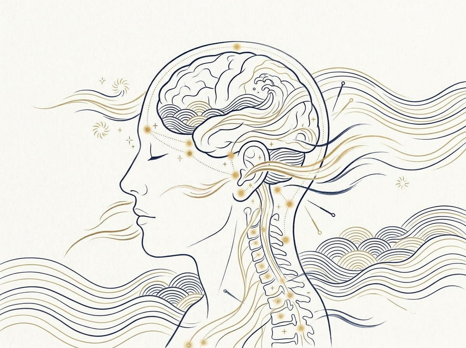

非定型うつ病の鍼灸
気分の波や鉛のような体の重さに対し、専門医の治療と生活リズム調整を前提に、自律神経と消化・睡眠を整える鍼灸を行います。

このようなお悩みはありませんか？
- ✓楽しい出来事には気分が上がるが、夕方から夜に強く落ち込む
- ✓10時間以上眠る過眠や、甘い物などの過食が続いている
- ✓手足に鉛が入ったように体が重だるく動くのがつらい
- ✓他者の言動に過敏になり、イライラや対人不安が強まっている
原因・メカニズム
非定型うつ病は20〜30代に多くみられ、好ましい出来事には気分が反応して明るくなる一方、夕方から夜間の抑うつ、過眠、過食、鉛様疲労感と呼ばれる強い体の重さ、他者評価への過敏さやイライラが特徴です。遺伝的要因に加え対人不安などの心理的要因が関与すると考えられ、専門医による薬物療法とカウンセリング・認知行動療法、規則正しい生活リズムの確立が治療の基本となります。
当院の施術アプローチ
1. 精神科・心療内科での薬物療法・認知行動療法を最優先とし、主治医の許可のもと補完的な体調調整を実施
2. イライラやだるさに関わる大敦、精神安定の神門、消化器を支える公孫、不安に関わる内関、百会などを用いた丁寧な鍼灸を実施
3. 過眠や夜間の落ち込みに配慮し、自律神経と生活リズムの安定を無理のない刺激量でサポート
よくある質問（FAQ）
Q. 気分の波が激しく自傷や衝動的な行動が心配な時期でも受けられますか？
急性の情緒不安定や自傷・希死念慮のリスクがある時期は鍼灸の対象外です。必ず精神科・心療内科の主治医へ速やかにご相談ください。
Q. 鉛のような体の重だるさへのケアも相談できますか？
はい。主治医の治療を継続しながら、全身の血流と自律神経を整えることで身体面の重だるさを和らげる補完的サポートを行います。
#非定型うつ病#鉛様疲労感#過眠#過食#自律神経#鍼灸